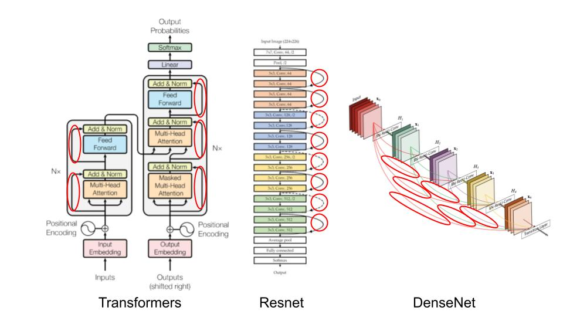
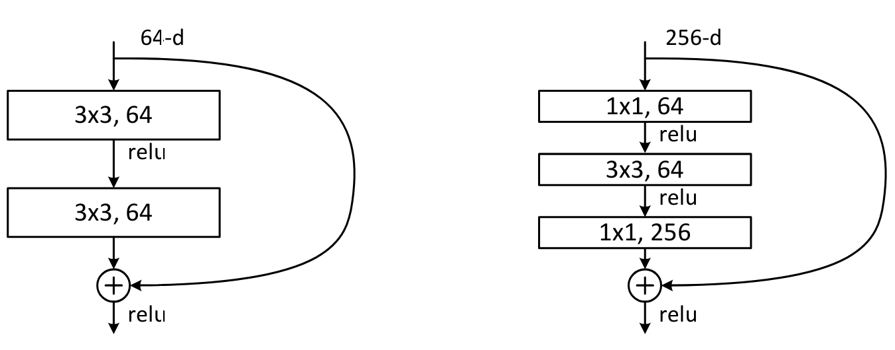

Conexiones residuales#
Las conexiones residuales, también llamadas skip connections, fueron introducidas en el artículo Deep Residual Learning for Image Recognition. Esta técnica permitió el uso de redes profundas, algo que antes no era realmente posible.
Desde entonces, las conexiones residuales están en todas partes:

En este curso, veremos por qué estas conexiones residuales son tan importantes y entenderemos su utilidad de manera intuitiva. Este notebook está inspirado en el curso de fastai.
Intuición#
El artículo sobre conexiones residuales parte de una observación: incluso utilizando batch normalization, una red profunda con un mayor número de capas es menos eficiente que una red menos profunda (asumiendo que los demás parámetros son idénticos y para una red ya relativamente profunda, por ejemplo, 20 capas). Este fenómeno ocurre tanto en los datos de entrenamiento como en los de validación, por lo que no se trata de un problema de overfitting.

Figura extraída del artículo original.
Intuitivamente, esto parece bastante anómalo. Imaginemos que reemplazamos nuestras 36 capas adicionales por funciones identidad (que no transforman la entrada). En este caso, la red de 56 capas debería ser tan eficiente como la de 20 capas. Sin embargo, en la práctica, no es así, y la optimización ni siquiera logra convertir estas 36 capas en identidad.
Una forma de entender las conexiones residuales es considerar que añaden directamente la identidad a la transformación. En lugar del clásico x=layer(x), se usa x=x+layer(x). En la práctica, la adición de estas skip connections permite una optimización mucho mejor.
Otra forma de verlo, que explica el término “residual”, es considerar la transformación como y=x+layer(x), lo que equivale a y-x=layer(x). El modelo ya no tiene como objetivo predecir \(y\), sino minimizar la diferencia entre la salida deseada y la entrada. De aquí proviene el término “residual”, que significa “el resto de la sustracción”.
El teorema de aproximación universal establece que una red neuronal lo suficientemente grande puede aprender cualquier función. Sin embargo, existe una gran brecha entre lo que es posible hacer teóricamente y lo que se logra en la práctica. Gran parte de la investigación en deep learning busca reducir esta brecha, y las conexiones residuales representan un avance importante en esta dirección.
El bloque ResNet#
Para profundizar un poco más, tomemos el ejemplo del bloque ResNet, que es la primera versión de las conexiones residuales y se aplica a las redes neuronales convolucionales. En lugar de tener x=x+conv(x) en cada paso, se tiene x=x+conv2(conv1(x)), lo que corresponde a esta figura:

Con las redes convolucionales, se desea reducir la resolución y aumentar el número de filtros con la profundidad de la red. Las conexiones residuales no permiten esto directamente, ya que no se pueden sumar tensores de diferentes tamaños. En la práctica, se puede modificar el tensor proveniente de la conexión residual:
Para reducir la resolución, basta con aplicar una operación de pooling (máximo o promedio).
Para aumentar el número de filtros, se utiliza una convolución con filtros de tamaño \(1 \times 1\), lo que equivale a un simple producto escalar.
Convolución \(1 \times 1\): En comparación con una convolución clásica, la convolución \(1 \times 1\) simplifica la transformación de los canales de la imagen sin mezclar la información espacial. Funciona principalmente como una operación de reducción de dimensionalidad o de reajuste de canales.
Aquí se muestra cómo se podría implementar el bloque de ResNet en PyTorch:
import torch.nn as nn
import torch.nn.functional as F
class ResBlock(nn.Module):
def __init__(self, ni, nf, stride=1):
self.convs = nn.Sequential(
nn.Conv2d(ni, nf, kernel_size=3, stride=1, padding=1),
nn.ReLU(),
nn.Conv2d(nf, nf, kernel_size=3, stride=1, padding=1)
)
# Si le nombre de filtre de l'entrée et de la sortie ne sont pas les mêmes
self.idconv = nn.Identity() if ni==nf else nn.Conv2d(ni, nf, kernel_size=1, stride=1)
# Si le stride est différent de 1, on utilise une couche de pooling (average)
self.pool =nn.Identity() if stride==1 else nn.AvgPool2d(2, ceil_mode=True)
def forward(self, x):
return F.relu(self.convs(x) + self.idconv(self.pool(x)))
Nota: Se utiliza la función de activación después de añadir la parte residual, ya que se considera el bloque ResNet como una capa completa.
El ejemplo de las conexiones residuales ilustra la importancia de que los investigadores practiquen y experimenten con las redes neuronales, en lugar de limitarse a la teoría.
En la práctica, se ha demostrado en el artículo Visualizing the Loss Landscape of Neural Nets que las conexiones residuales tienen el efecto de suavizar la función de loss, lo que explica por qué la optimización funciona mucho mejor.

Sobre el bloque bottleneck#
Otro tipo de bloque fue introducido en el artículo Deep Residual Learning for Image Recognition. Se trata del bloque bottleneck, que se parece a esto:

A la izquierda, el bloque ResNet básico y a la derecha, el bloque bottleneck.
Este bloque contiene más convoluciones, pero en realidad es más rápido que el bloque ResNet básico, gracias a las convoluciones \(1 \times 1\) que son muy rápidas. La gran ventaja de este bloque es que permite aumentar el número de filtros sin incrementar el tiempo de procesamiento (e incluso reduciéndolo). Es este bloque el que se utiliza para las versiones más profundas de ResNet (50, 101 y 152 capas), mientras que el bloque básico se usa para las versiones menos profundas (18 y 34 capas).
Nota: En la práctica, si se usan las capas bottleneck en las arquitecturas menos profundas (18 y 34 capas), generalmente se obtienen mejores resultados que con los bloques ResNet clásicos. Sin embargo, en la literatura, la mayoría de las personas siguen utilizando la versión con el bloque ResNet. A veces, las costumbres quedan arraigadas, pero esto muestra la importancia de cuestionar las “cosas que todos saben”.
Para concluir, las capas residuales son un avance importante en el deep learning. Se recomienda utilizarlas tan pronto como su red comience a volverse profunda.